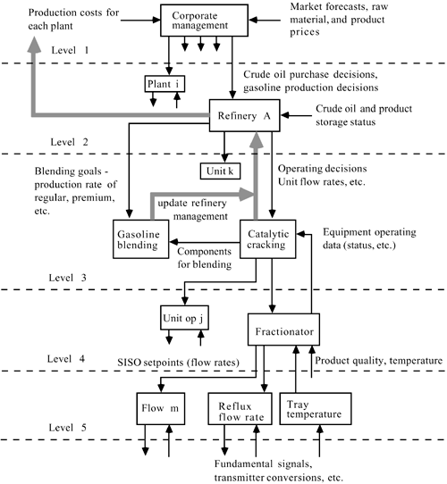

| [ Team LiB ] |
|
15.4 The Control and Optimization HierarchyOperating LevelsThe actual operation of a chemical manufacturing company involves decisions and actions that occur at a number of levels and timescales, as shown in Figure 15-15. At the corporate level, allocation decisions are made. Market demand projections, raw material availability, and past operating costs are used to set long-term plans for corporate-wide optimization. These decisions are typically made on an infrequent basis—weekly, monthly, or quarterly. Often these decisions are made using linear programming (LP) techniques. This information is passed to the plant level. Figure 15-15. Corporate operating levels.At the next level are plant decisions about allocation among various plant operating units. These may be made daily, or even more frequently, depending on the plant automation and control system. For example, steam may be generated by a number of different sources, with different costs, depending on relative energy and product values. In an oil refinery, different units make similar components for blending into gasoline (which is produced in many different grades), and these relative amounts may change depending on energy and product values, operating problems with certain units, and so forth. The operating unit level takes information available on a daily basis and over the course of the day makes hour-by-hour changes, on average, to meet those goals. The unit operation level involves individual equipment, and desired setpoints may be changed on an hourly (or more frequent) basis. The regulation on this level occurs on the order of minutes. The fundamental control level consists primarily of process flow or pressure controllers. The lowest level generally involves the manipulation of a control valve, or the reading of a sensor, where the time frame is on the order of 1 second or less. Notice that there is a feedback of information from the lower levels back up to the higher levels. The basic idea of feedback control occurs at the unit operation and fundamental control levels. Here, control algorithms are used to adjust manipulated inputs (controller outputs or control variables) to maintain process outputs (process variables) at desired values (setpoints). Petroleum Refining ExampleAn example of the overall operating problem is illustrated in Figure 15-16, for a typical petroleum refining company. At the highest level, corporate management decides where to purchase crude and how to distribute the crude oil to the various refineries in the corporation. At the next level (level 2), refinery A takes the current and future crude delivery projections and gasoline production projections and determines the operating conditions for each process unit (level 3, e.g., the catalytic cracking unit) in the refinery. Setpoints for the unit operations (level 4, e.g., distillation) are determined at this point. The unit operations level determines the process flow rates, such as the distillate or reflux flow rates (level 5). These controllers then determine, for example, the pressure to the control valves to regulate various flow rates. Figure 15-16. Corporate operating levels: petroleum refining example. DiscussionFor many plants, much of the feedback provided between different levels is performed manually. During the past decade, major corporations have moved toward automating more of these functions, and better integrating the decisions that are made at different levels. The broad term for this, at the plant level, is computer-integrated manufacturing (CIM). Developments in information technology and database management are making this task easier. Corporate-wide technology is known as supply chain management or enterprise optimization. This software links databases from various suppliers (of raw materials) with corporate scheduling, and with customer orders (of products). |
| [ Team LiB ] |
|